Project 01
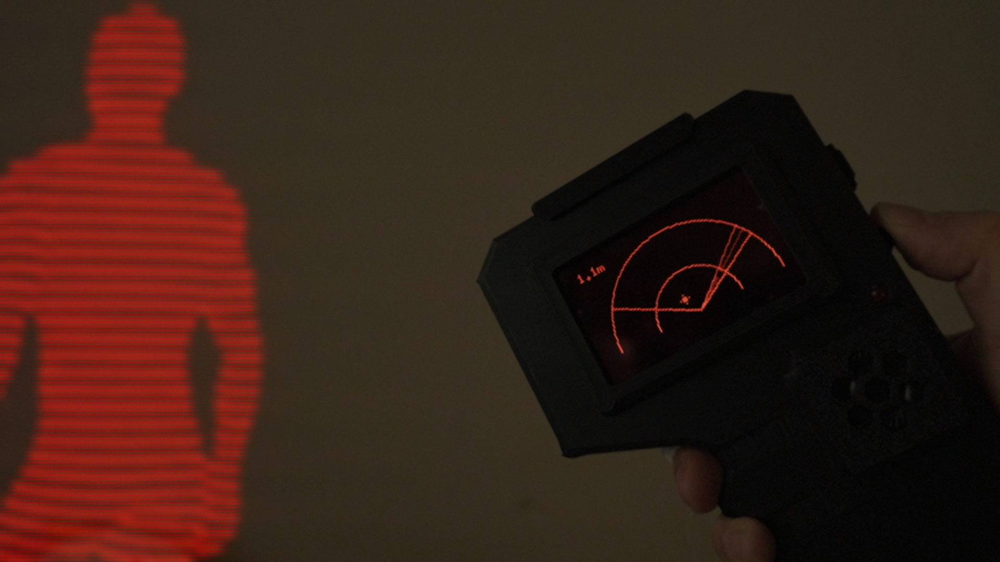
Heartbeat
Radar
A handheld mmWave radar device that tracks targets through walls in real time — distance, speed, and spatial coordinates plotted live on an integrated OLED display. IRL wallhacks.
Demo
Radar
HLK-LD2450
24 GHz mmWave
Platform
Raspberry Pi Pico W
RP2040, dual-core
Display
OLED screen
live radar plot
How it works
mmWave scanning
The HLK-LD2450 emits 24 GHz millimetre-wave pulses that penetrate walls and soft materials. Reflected signals are processed onboard the sensor to extract up to three simultaneous targets — each with X/Y coordinates, distance, and radial speed.
Data parsing on the Pico W
The Pico W reads the LD2450's UART output frame and parses the binary target data in real time. Each frame contains position and velocity for every detected target, updated continuously as objects move through the space.
Live radar plot on OLED
Parsed target coordinates are scaled and rendered as a top-down radar sweep on the OLED display. Targets appear as moving dots in spatial relation to the device — showing distance and direction through walls in real time.
Handheld form factor
The whole system — radar module, Pico W, OLED, and custom PCB — sits inside a compact 3D-printed enclosure designed for single-hand use. Point it at a wall and watch targets move on the display.
📡 Through-wall detection24 GHz
mmWave frequency — penetrates walls, clothing, and non-metallic materials
3
Simultaneous targets tracked with individual X/Y coordinates and velocity
~6m
Effective detection range of the HLK-LD2450 sensor
Live
Real-time OLED display updated continuously as targets move
PCB Design
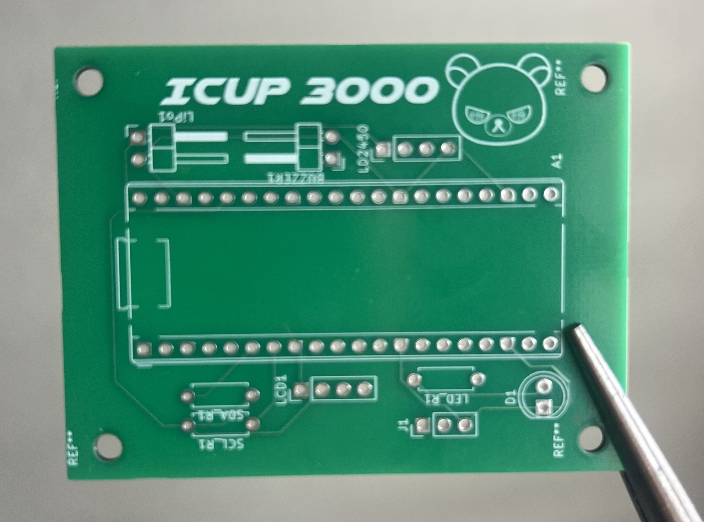
Custom PCB
in KiCad
Designed a custom PCB in KiCad to integrate the Raspberry Pi Pico W, HLK-LD2450 radar module, and OLED display onto a single clean board — eliminating breakout wiring and keeping the handheld form factor tight.
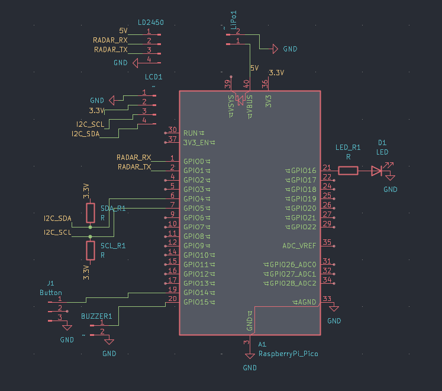
schematic — component connections
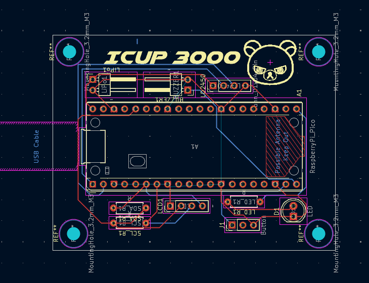
layout — routed board
Software
KiCad
schematic + layout
Interfaces
UART + I²C
radar + display
MCU
Raspberry Pi Pico W
RP2040 footprint
Output
Gerber files
ready for fab
Enclosure Design
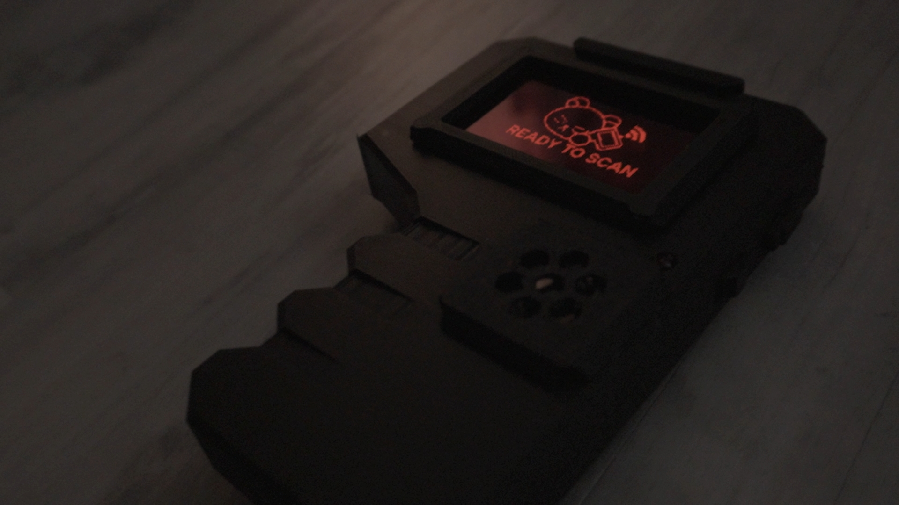
Handheld Enclosure
in Autodesk Fusion
Modelled a compact handheld enclosure in Fusion 360 sized to fit the custom PCB, radar module, and OLED in a single-hand grip. Printed on a Bambu Lab P1S for tight tolerances and a clean surface finish.

fusion 360 top down
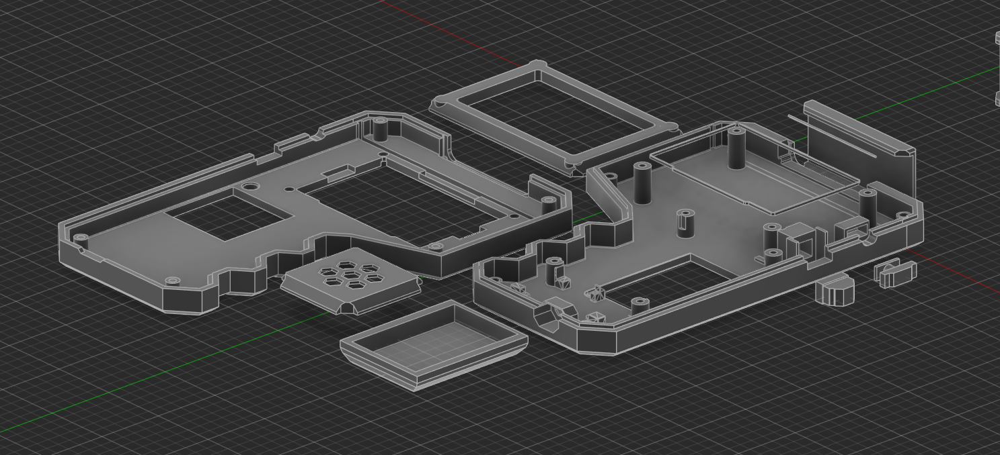
angled view
Software
Fusion 360
parametric CAD
Printer
Bambu Lab P1S
high accuracy FDM
Form factor
Handheld
single-hand grip
Assembly
Snap-fit shell
tool-free
Project 02
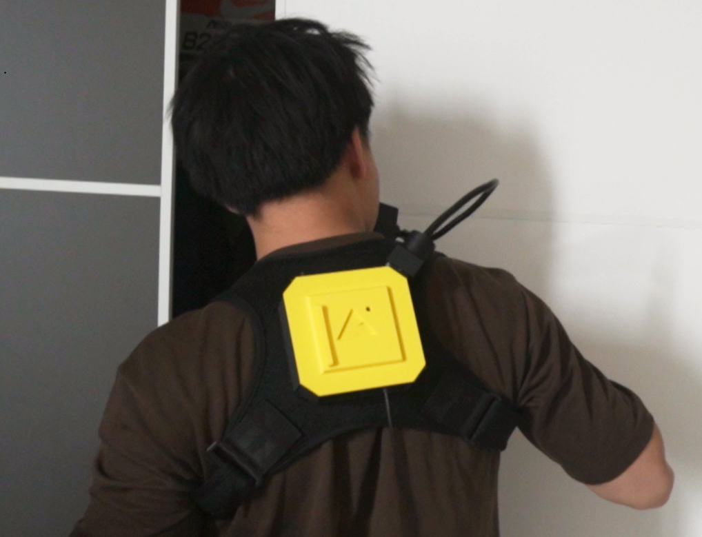
Posture
Corrector
A wearable microcontroller system that reads posture in real time and delivers an electrical shock when the user slumps — breaking the habit loop. This one is more for fun, but allowed me to develop many technincal skills.
Demo (very exaggarated reaction)
Sensor
MPU-6050 IMU
3-axis accel + gyro
Platform
Arduino Nano
ATmega328P, 16 MHz
Feedback
Shock module
repurposed pet collar
How it works
Calibration
On startup the user holds still for ~2 seconds. The MCU averages 200 accelerometer samples over I²C to compute a personal pitch and roll baseline — so the device works regardless of how it's mounted. Re-calibration is available live via serial command r.
Low-pass filtered sampling at 50 Hz
The MPU-6050 is polled every 20 ms. Raw pitch and roll angles are smoothed through a low-pass filter (α = 0.35) to reject noise from normal movement like reaching or turning, without adding significant lag to real slouch detection.
Hold-time threshold with hysteresis
A slouch is only flagged if the tilt delta exceeds 6° for at least 1.5 seconds continuously — preventing false triggers from brief movements. A 1° hysteresis deadband stops the system from re-arming and firing again immediately on the edge.
Shock + buzzer feedback
A GPIO pin drives a PN2222 transistor which triggers the shock module for 300 ms, with a 2-second cooldown before it can fire again. An active buzzer fires simultaneously as a secondary cue. Written in C++ using the Arduino IDE.
Haptic aversion loopCode snippet
// Hold-time logic — only trigger if slouch sustained > HOLD_MS
if (delta >= TILT_THRESHOLD_DEG) {
if (!overThreshold) { overThreshold = true; tOverStart = now; }
} else {
overThreshold = false; // dropped below — reset the hold timer
}
bool heldLongEnough = overThreshold && ((now - tOverStart) >= HOLD_MS);
// Fire only when held, armed, and idle — then disarm until posture recovers
if (state == IDLE && armed && heldLongEnough) {
startPress();
armed = false;
}
// Re-arm once back inside the hysteresis band
if (state == IDLE && !armed && delta <= (TILT_THRESHOLD_DEG - HYSTERESIS_DEG)) {
armed = true;
}
// Low-pass filter — smooths noise without adding significant lag
pitchFilt = LPF_ALPHA * p + (1 - LPF_ALPHA) * pitchFilt;
rollFilt = LPF_ALPHA * r + (1 - LPF_ALPHA) * rollFilt;50 Hz
Sensor polling rate — 20 ms sample interval via software timer
6°
Default tilt threshold, tunable live via serial command
1.5s
Hold time required before shock fires — prevents false triggers
5V USB
Powered via portable USB power bank — practical for a wearable prototype
PCB Design
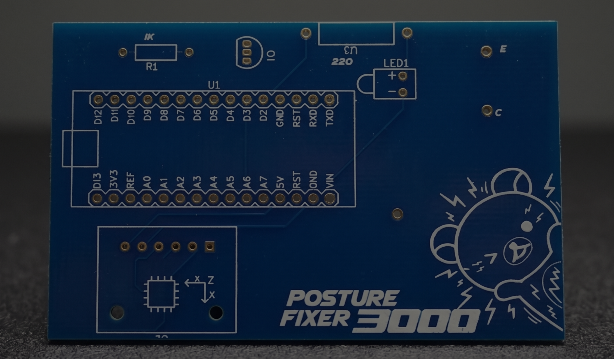
Custom PCB
in EasyEDA
Designed a two-layer PCB to consolidate the MCU, IMU breakout connections, shock module trigger circuit, and USB power input onto a single compact board. Routing was optimised to keep high-frequency I²C traces short and away from the shock output lines to minimise interference.
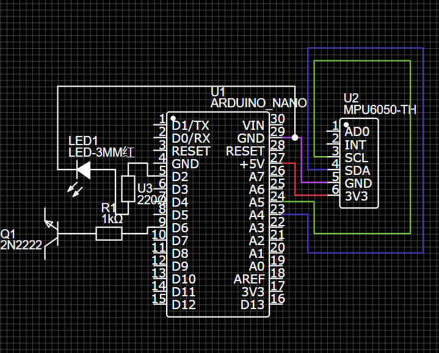
schematic — component connections
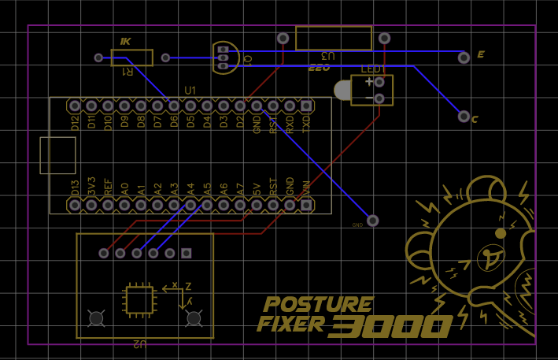
layout — routed 2-layer board
Layers
2-layer
signal + ground plane
Software
EasyEDA
schematic + layout
Key ICs
ATmega328P, MPU-6050
+ USB power input
Output
Gerber files
ready for JLCPCB fab
Enclosure Design
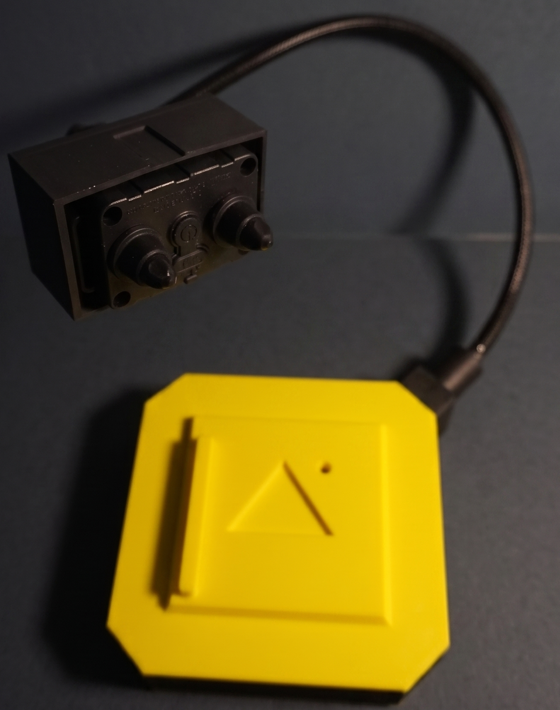
3D-Printed Housing
in Autodesk Fusion
Modelled a slim wearable enclosure in Fusion 360 designed to sit flush against the upper back. The two-part shell snaps together around the PCB and battery, with press-fit openings for the electrode leads and a recessed reset button. Printed in flexible PLA for skin comfort.
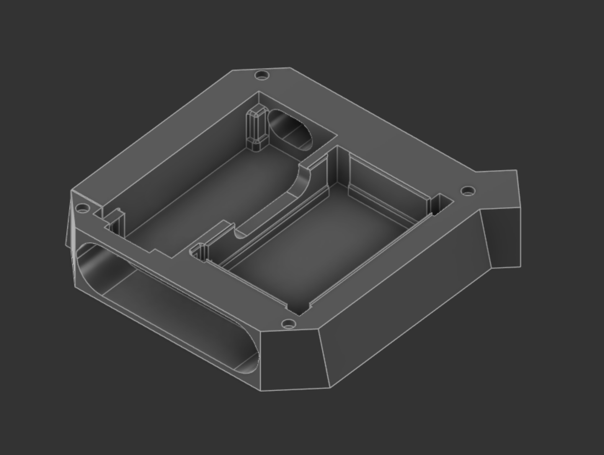
fusion 360
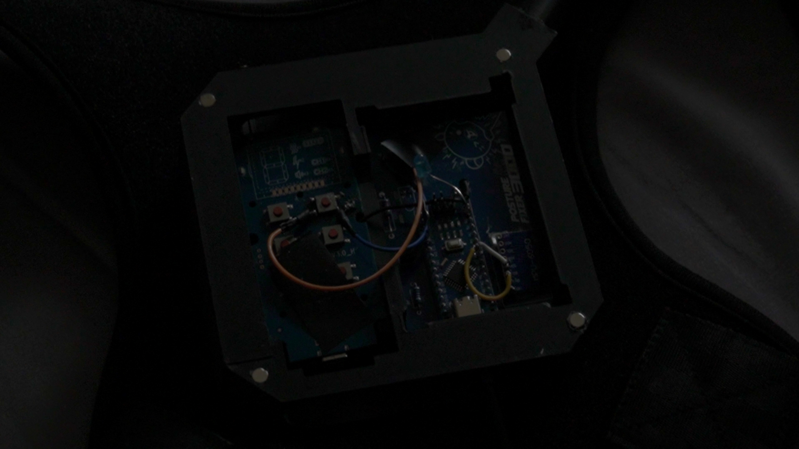
final print
Software
Fusion 360
parametric CAD
Material
PLA
Process
FDM printing
0.2 mm layer height
Design detail
Magnetic Lid
tool-free assembly